ECON 2316 • Microeconomic Theory • Chapter 9
Profit Maximization
and Firm Supply
Alex runs a pizzeria with fifty competitors in a three-mile radius. How many pies should he bake — and when should he shut the doors?
Dr. Richeng Piao
Department of Economics
Northeastern University — 100 min
Learning Objectives
By the end of class today, you will be able to…
9.1
Set up the price-taking firm's profit-maximization problem \(\pi(q) = pq - c(w, r, q)\) and explain what "price taking" means. (Bloom L2)
9.2
Apply the profit-max first-order condition \(p = MC(q^*)\) and the second-order condition \(MC'(q^*) > 0\) to find the firm's optimal output. (Bloom L3)
9.3
Derive the firm's supply curve as the inverse of marginal cost above shutdown, and compute the Cobb-Douglas supply elasticity. (Bloom L4)
9.4
Apply Hotelling's lemma \(\partial \pi/\partial p = q^*\) to recover supply and input demands from the profit function. (Bloom L4)
9.5
Distinguish the short-run shutdown rule (\(p < \min AVC\)) from the long-run exit rule (\(p < \min ATC\)) using quasi-rents. (Bloom L5)
From the Cost Function to the Output Choice
Ch 8 — What's cheapest?
- Cost-min given output: \(\min wL + rK\) s.t. \(f \geq q\)
- Cost function \(c(w, r, q)\)
- Marginal cost \(MC = \partial c/\partial q\)
- Output \(q\) was taken as given
Ch 9 — How much to make?
- Add an output price \(p\); the firm now chooses \(q\)
- Profit-max: \(\max_q\; pq - c(w, r, q)\)
- FOC \(\Rightarrow p = MC\); supply \(=\) inverse-MC
- When to operate vs shut down
The cost function from Ch 8 is the input to today's problem. Cost minimization solved "cheapest way to make \(q\)" at every \(q\); profit maximization picks the best \(q\). The headline result \(p = MC\) is the envelope-theorem identity from Ch 8 (\(MC = \mu\)), now viewed from the output-choice side.
The Five Industry Characteristics
Commit these to memory — you will apply them four times across the market-structures tour.
1. Number of firms. A few giants? Hundreds of small shops? One sole provider?
2. Nature of the product. Homogeneous (perfect substitutes) or differentiated (each its own thing)?
3. Barriers to entry. Enter tomorrow with modest capital — or need patents, billions, licenses, network effects?
4. Control over price. Accept whatever the market sets (price-taker) or post your own (price-maker)?
5. Long-run economic profit. Does free entry compete profit to zero, or do barriers sustain it?
Based on these five differences, every market falls into one of four general structures — a spectrum of market power running from pure price-takers to pure price-makers. We meet all four next →
The Corn Market — A Perfect-Competition Case
Score the five characteristics on US field corn (No. 2 Yellow) — every one lines up.
1. Many firms — ~300,000 US corn farms; one grower planting more never nudges the price. ✓ very many
2. Homogeneous product — “No. 2 Yellow Corn” is a federal grade; every farm’s bushel is a perfect substitute. ✓ identical
3. Free entry & exit — no patents or licenses; rent land, buy seed, plant. ✓ low barriers
4. Price-takers — farmers accept the Chicago Board of Trade price (~$4.70/bu, 2026); they choose how much to plant, never the price. ✓ no control
5. Zero long-run profit — good years lure entry & expansion → supply rises → price falls back to min ATC. ✓ competed away
Verdict → Perfect Competition — pure price-taker, zero market power · ← this chapter
Another Competitive Market — Bottled Water
Store-brand water: many sellers, one near-identical product.
Run the same five-characteristic checklist — generic bottled water scores like corn.
1. Many sellers — national brands + every store’s own label. ✓
2. Near-homogeneous — purified water is purified water. ✓
3. Free entry & exit — modest startup cost (next slide). ✓
4. Price-takers — generic water competes on price, little power. ✓
5. Zero long-run profit — easy entry competes margins away. ✓
Verdict → Competitive — generic bottled water ≈ perfect competition.
Nuance: premium brands (Fiji, Evian) differentiate → monopolistic competition — but the commodity/store-brand segment is the competitive case.
How Easy Is It to Enter? — Bottling Water
Condition 3 in the real world: free entry is the engine behind the competitive result.
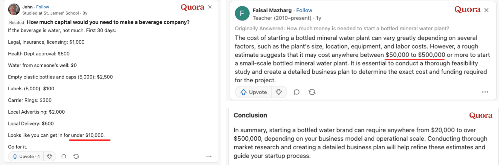
Quora: “How much does it cost to start a bottled-water company?”
A small operation can start for under $10,000; even a full business plan runs ~$20K–$500K by scale.
No patents. No licenses to fight for. No billion-dollar plant — pocket change next to wireless spectrum or a power grid.
Low barrier → free entry → many sellers → economic profit competed to zero
Perfect Competition: Other Examples
A share = any other share · one ounce of gold = another · one public price → millions of price-takers
The Coffee-Shop Market — Monopolistic Competition
Same five characteristics — but two answers flip, and that flip is the whole difference.
1. Many firms — a dozen cafés within a few blocks of campus; no single shop dominates. ✓ many
2. Differentiated product — each shop has its own roast, menu, baristas, and vibe; students have favorites. Δ not homogeneous
3. Free entry & exit — lease a space, buy an espresso machine, open. ✓ low barriers
4. Some price control — differentiation tilts demand: raise the latte $0.25 and you lose some — not all — customers. Δ price-setter
5. Zero long-run profit — entry still competes profit away (now with excess capacity). ✓ competed away
Verdict → Monopolistic Competition — many sellers + differentiation → some pricing power · Ch 13
Many Sellers (and Buyers)
Walk a few blocks near campus and you pass a dozen cafés.
Boston has hundreds of coffee shops and thousands of daily buyers. No single café is big enough to move the market.
Condition 1 of monopolistic competition — many sellers and many buyers — looks just like perfect competition. You can always walk to another shop.
So why isn’t it perfect competition? Because the coffee isn’t identical. That’s next. ↓
Differentiated Products — the Heart of It
Presentation — latte art
Recipe — the roast & beans
Vibe — the space & service
Because each shop’s product is a little bit unique, it faces a slightly downward-sloping demand — a sliver of pricing power. Differentiation is what separates monopolistic competition from perfect competition.
How Many Ads Do You See in a Day?
Advertising is another powerful tool for differentiation — firms spend to make their brand stand out.
Type your best guess — how many ads (any kind) do you think you see in a single day?
Enter a number and hit Submit (or Enter). Press ↓ for the class results.
Class Results — Ads per Day
The real answer: estimates put daily ad exposure at 4,000–10,000. Almost everyone guesses far too low — that’s how saturated the differentiation arms race has become.
Monopolistically Competitive Firms Are Everywhere
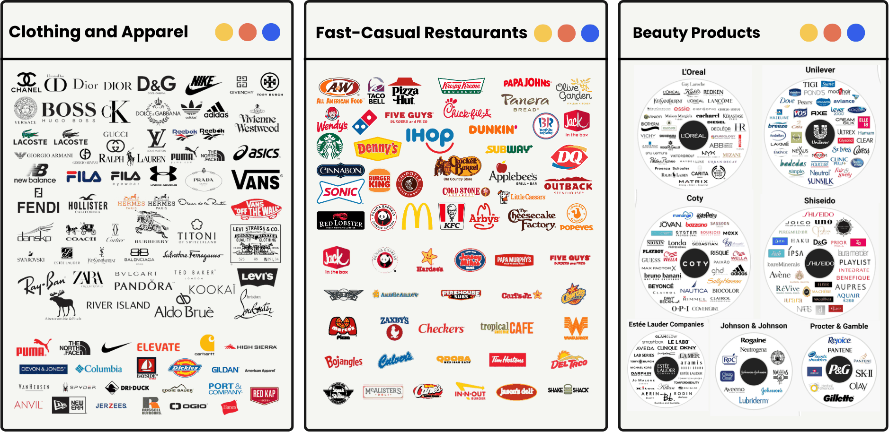
Clothing, restaurants, apps, snacks, cafés — the products you meet most are monopolistically competitive: many firms, each a little different.
Many sellers, differentiated products
Compete on branding & advertising, not just price
Low barriers → entry drives long-run profit to zero (with excess capacity)
The most common market structure in everyday life — the full treatment is Chapter 13.
The Wireless Market — Oligopoly
Three carriers, billions in barriers — and every move watches the rivals.
1. Few firms — three national carriers (Verizon, AT&T, T-Mobile) cover ~98% of US subscribers. ◆ just a handful
2. Branded, similar service — plans rhyme, but coverage, perks, and bundles differentiate. ≈ varies
3. High barriers — spectrum licenses sell for billions; a national network is tens of billions in fixed cost. ✗ very high
4. Substantial price control — with so few rivals, prices carry real power and tend to move together. $ price-makers
5. Profit can persist — barriers keep new entrants out, so economic profit need not vanish. ● can last
Verdict → Oligopoly — few firms + high barriers → strategic interdependence (game theory) · Chs 13–14
Another Oligopoly — Potato Chips
A whole aisle — but only a few firms. Frito-Lay (Lay’s, Ruffles, Doritos) alone controls well over half the snack shelf.
Inside the Potato-Chip Oligopoly
Heavy R&D investment
In the 1980s, Frito-Lay ran chewing-simulator studies and found chips breaking at about 4 PSI deliver the optimal crunch — loud and crisp without being too hard. That kind of sunk R&D is how incumbents defend their share.
Substantial barriers to entry — shelf-space deals, distribution scale, brand budgets. ✓
Potential for long-run economic profit — barriers let it persist. ✓
Market Share of Potato Chip Brands in the U.S.
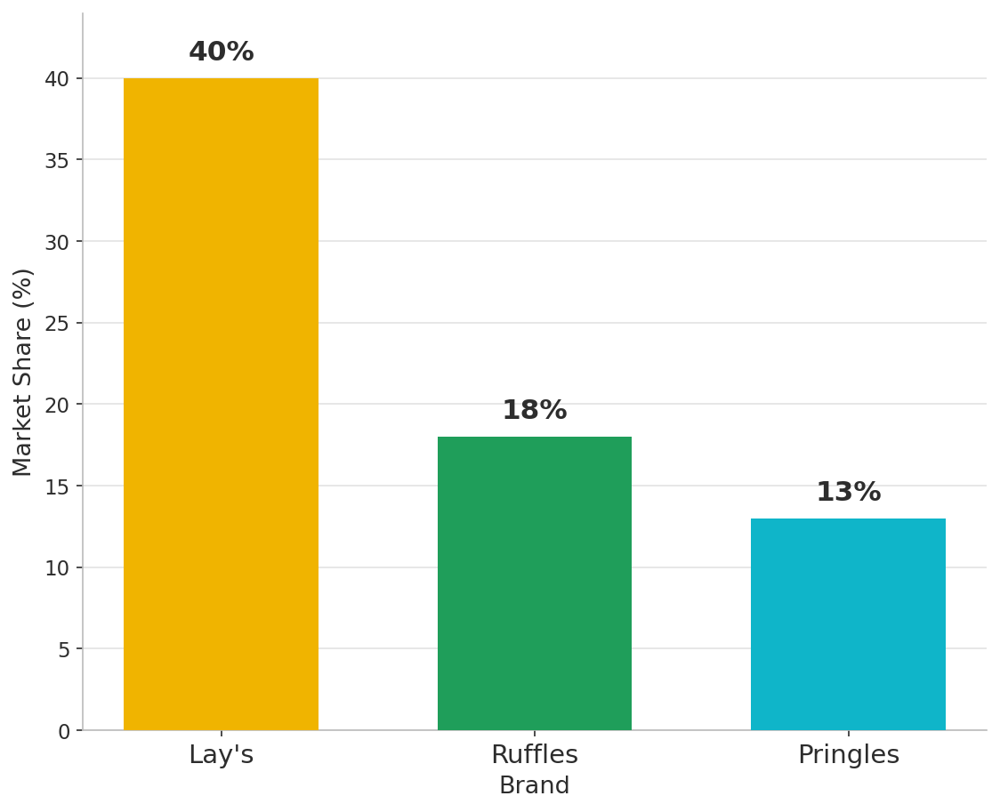
SNAC International. “Market Share of the Leading Potato Chip Brands in the U.S. in 2021/2022, Based on Dollar Sales.” Statista Inc., 14 Jul 2022. — note Lay’s + Ruffles are both Frito-Lay.
Oligopolies Are Everywhere
Airlines · automakers · wireless carriers — a handful of giants each, high barriers, and every move watches the rivals (game theory, Ch 13).
The Electricity Market — Monopoly
One set of wires to your home — and no second supplier to call.
1. One firm — a single utility owns the wires to your home; you can’t shop the grid. ● one seller
2. No substitutes — grid power is unique; no rival’s electrons reach your outlet. ✗ unique
3. Insurmountable barriers — a second parallel grid is absurdly costly (a natural monopoly) — plus a regulatory franchise. ✗ blocked
4. Price-maker — the utility would set the price, so a public utility commission caps the rate instead. $ rate-regulated
5. Profit can persist — barriers protect it; regulators allow a “fair return.” ● sustained
Verdict → Monopoly — one seller, no substitutes → price-maker (max power, tamed by regulation) · Ch 11
Is LEGO a Monopoly?
LEGO’s brick patents expired years ago — yet brand, precision, and a huge ecosystem keep real rivals tiny. The textbook’s go-to monopoly example.
How LEGO Holds Its Grip
Setting the Bar — Barriers to Entry
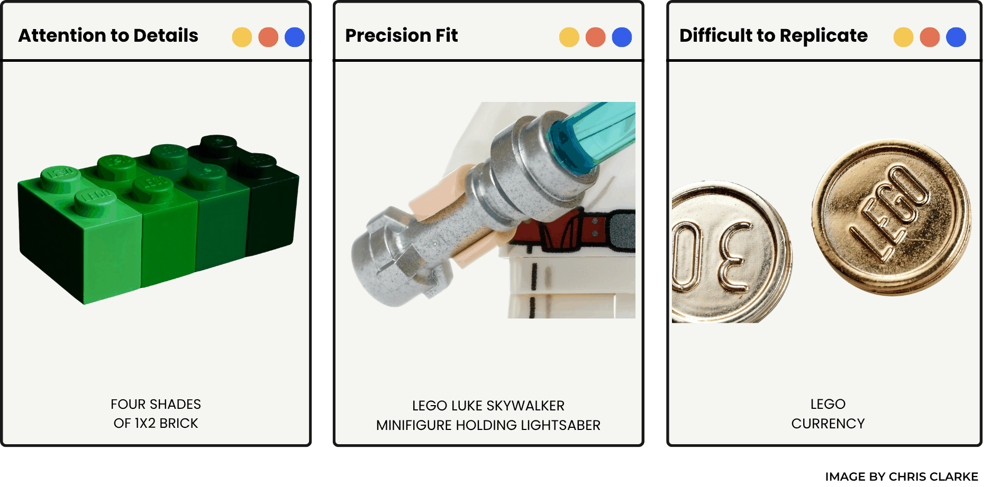
Micron-level precision, a massive parts catalog, and exclusive licensing (Star Wars, Marvel) make LEGO expensive and hard to replicate — high barriers that protect its market power and let profit persist.
No Close Substitutes
Knockoffs exist — but none match LEGO’s clutch power, quality, ecosystem, and brand. Buyers don’t see a real substitute. A unique product with no close substitutes is the defining monopoly trait.
Natural Monopoly — One Set of Pipes
Some markets are cheapest served by one firm. Building a second gas, water, or power network wastes enormous fixed cost — a natural monopoly. That’s why we regulate utilities instead of forcing competition.
Monopolies & Near-Monopolies Everywhere
Search engines · patented drugs · major sports leagues — each a (near-)monopoly via network effects, patents, or exclusive rights. The full treatment is Chapter 11.
What Alex Decides Each Day
🍕
1. Output
Given \(p = \$15\), how many pizzas — fifty? eighty? → \(p = MC\) (§9.3)
👥
2. Labor
How many on shift? Too few stalls the line; too many eats the day. → Hotelling \(L^*\) (§9.4)
🔒
3. Shutdown
Slow week, revenue barely covers ingredients — stay open or close? → \(p\) vs min AVC (§9.5)
Today's plan. §9.2 sets up profit \(= pq - c\). §9.3 finds the profit-max output where \(p = MC\). §9.4 shows the supply curve is the rising part of \(MC\), and Hotelling's lemma recovers it from the profit function. §9.5 settles shutdown vs exit — with three real 2024 bankruptcies. §9.6–9.7 do comparative statics and the long-run knife-edge.
Conditions 1 & 2 — Many Sellers, One Product
Many sellers: if one wheat farmer plants half an acre more, the global price doesn’t budge. 50 pizza shops clears this bar; two airlines on a route does not.
Homogeneous: a bushel of Kansas wheat is a bushel of Kansas wheat. Grade-A Large eggs from Iowa = from Pennsylvania. Buyers genuinely don’t care.
Once buyers start caring about brand, recipe, or “vibe,” we’ve moved toward monopolistic competition (Ch 13).
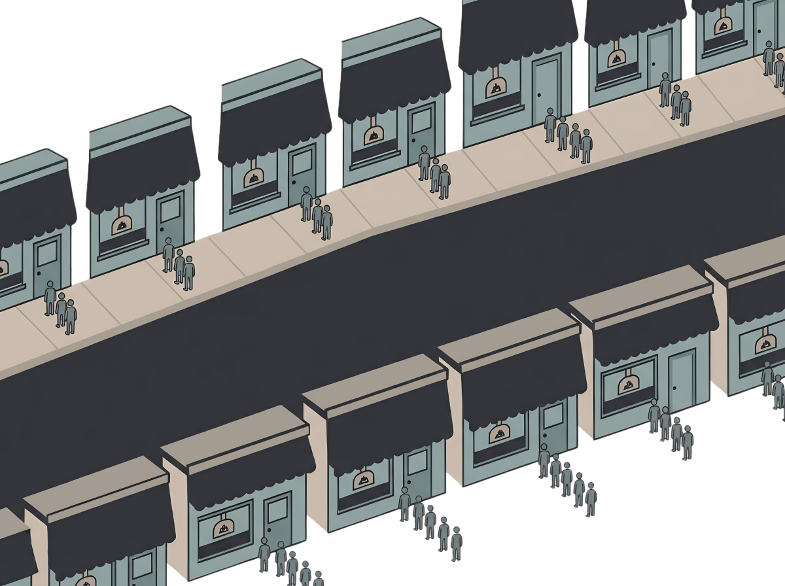
The Plain Cheese Slice — Every Box Checked
Hold the toppings — a basic cheese slice is a near-commodity.
Run the four conditions on the plain cheese slice market near campus:
1. Many buyers & sellers — ~50 shops within 3 miles, thousands of late-night buyers. ✓
2. Homogeneous product — one plain cheese slice ≈ any other. ✓
3. Free entry & exit — rent a storefront, buy an oven, open. ✓
4. Price-takers — everyone’s at ~$3.95; charge more, lose the block; charge less, bleed money. ✓
All four boxes checked → perfect competition.
Caveat: this only holds for the plain cheese slice. Specialty pies, toppings, and brand/vibe differentiate — that’s monopolistic competition (Ch 13).
Many Sellers — Just Look at the Map
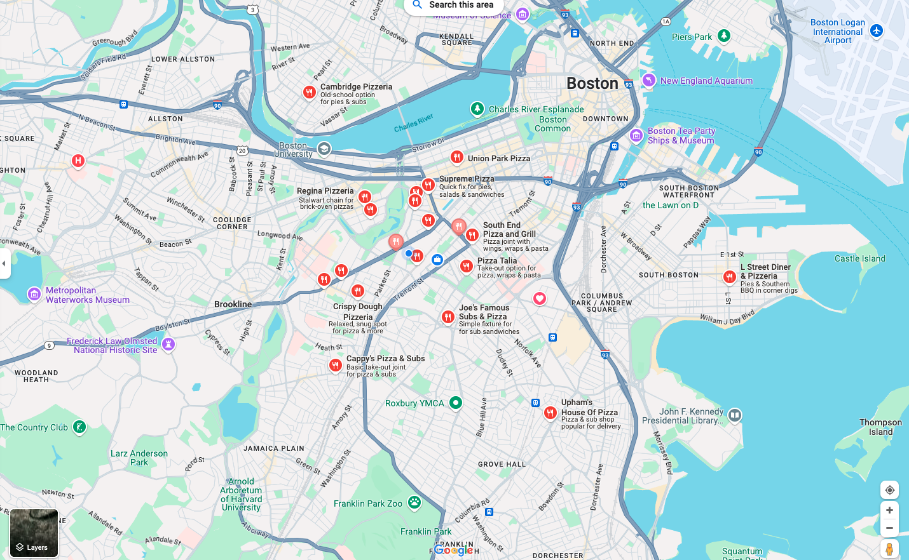
Dozens of pizza shops in a few blocks — condition 1 in one glance. No single slice-shop has the market power to move the price.
Fifty Shops Within Three Miles
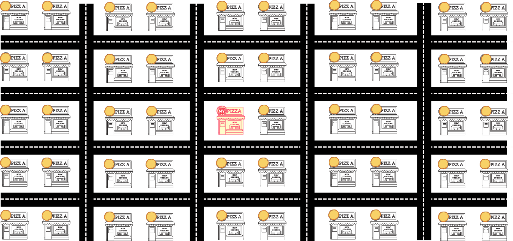
About 50 shops compete inside a 3-mile radius of campus — and we’re studying just one product across all of them: the plain cheese slice.
Conditions 3 & 4 — Free Entry, Price-Takers
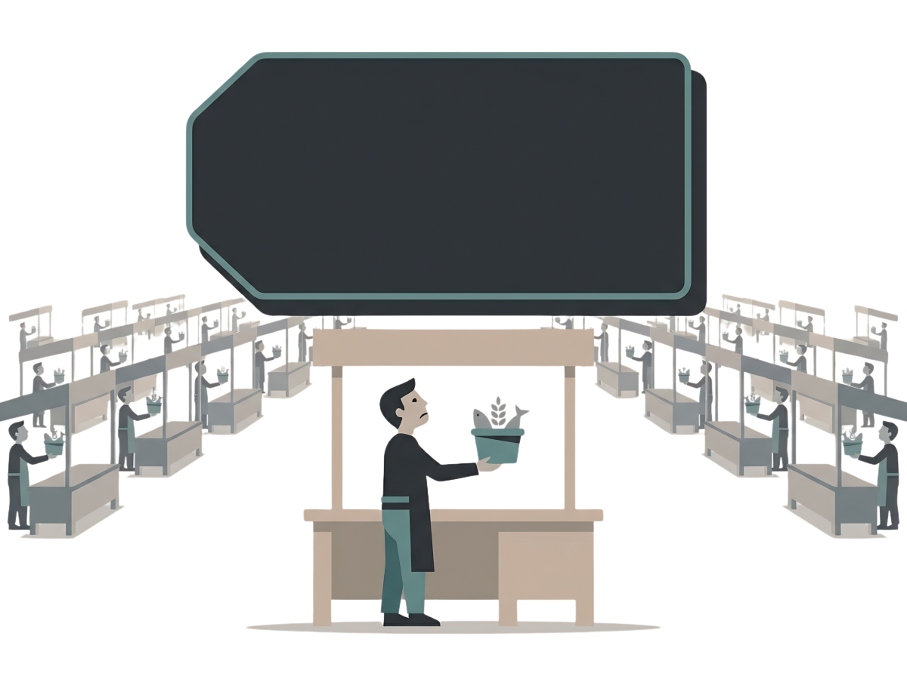
Free entry & exit: a firm that spots profit can enter; a firm losing money can leave. This is what drives the long-run zero-profit result later in the chapter.
Price taker: a firm that must accept the market price as given. It chooses its quantity; it cannot influence the price.
A price-taker is not weak — she is rational. Charge above market → lose every customer. Charge below → light money on fire.
The Going Price — About $10–20 a Head
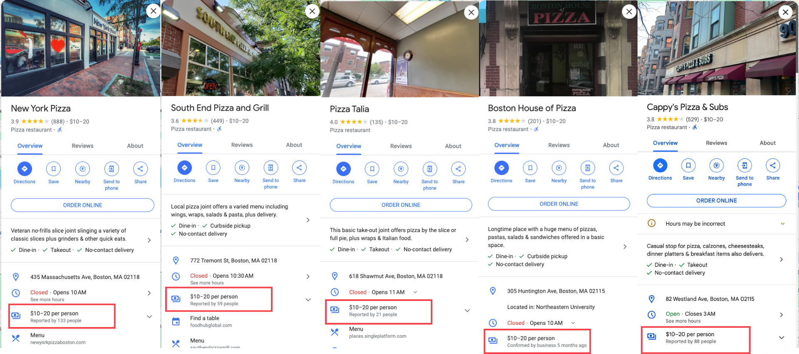
Check any shop on Maps — they all cluster at $10–20 per person. Nobody’s an outlier. That’s the price the market hands Alex.
Charge Too High ($15) → Lose Everyone
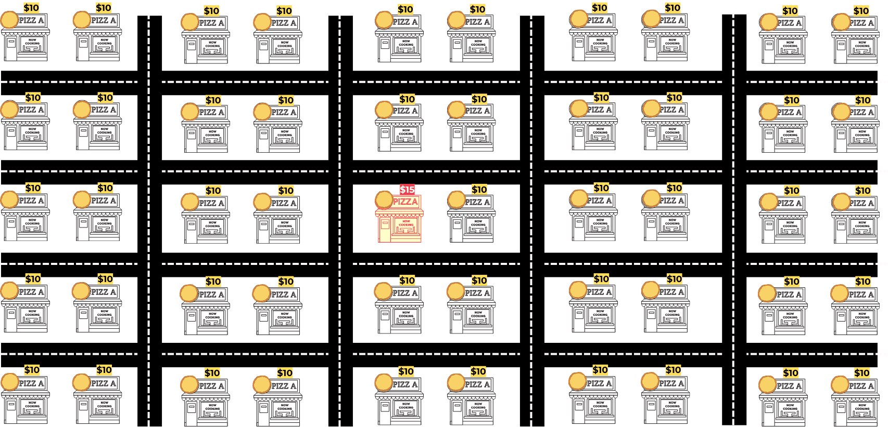
Price your slice at $15 while the block sits at $10, and customers just walk to the next shop. You sell almost nothing.
Charge Too Low ($5) → Bleed Money
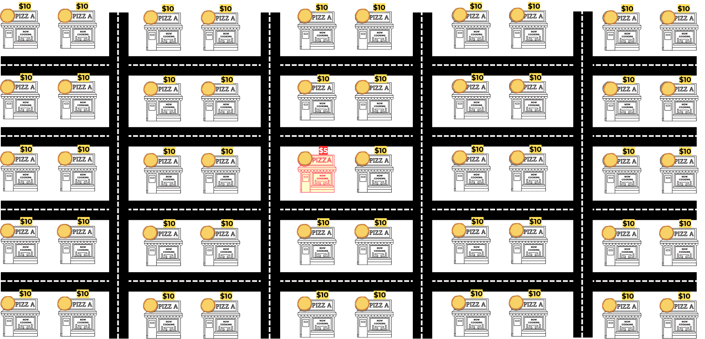
Drop to $5 and you’ll sell — but you torch margin you never needed to lose. The market would have paid $10.
Match the Market ($10) → You Sell
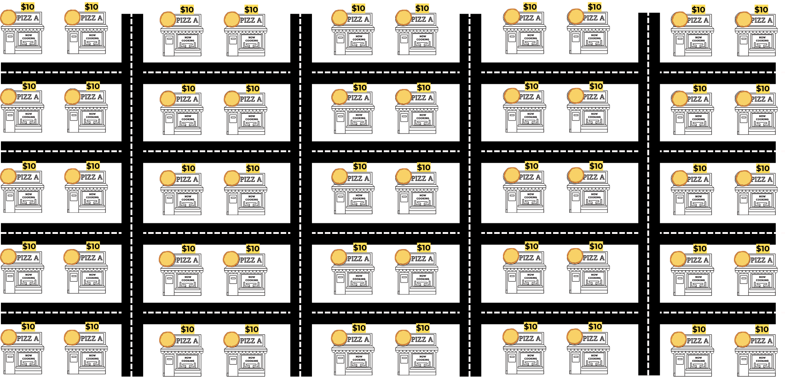
Price at $10, like everyone else, and you sell all you can make at the going rate. The only rational move.
Therefore: a Price-Taker
Above the market ($15) → lose every customer to the 49 rivals.
Below the market ($5) → sell, but bleed margin for no reason.
At the market ($10) → sell all you can make. The only move.
Alex can’t set the price — she can only take it. That’s a price-taker (condition 4), and it’s why her firm demand curve is flat.
The Firm’s Demand Curve Is Flat
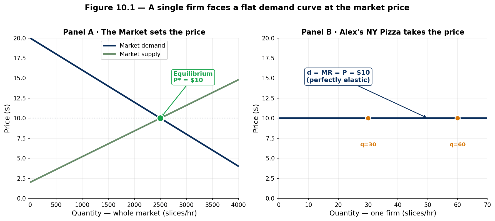
Market demand slopes down. But the demand facing one firm is a horizontal line at the market price. How can both be true?
Because the firm is a tiny share. If Alex raises her price, she loses all 49 rivals’ worth of customers. If she lowers it, she can sell everything she makes without moving the market.
Marginal revenue (MR) = revenue from one more unit. For a price-taker, every unit sells at the same price, so…
P = MR
The single most important equation in the chapter. Everything builds on it.
Figure 10.1 — The Industry Sets the Price; the Firm Takes It
Panel A — Industry (Market)
Panel B — Firm (price-taker)
Section 3 · LO 10.3 & 10.4
The Competitive Firm’s Decision
Alex can’t choose her price — only her quantity
Profit = Revenue − Cost
Total Revenue
TR = P × Q
Total Cost
TC = FC + VC
Economic Profit
π = TR − TC
Alex’s mission is to maximize profit. Price is fixed (she’s a price-taker), so her only lever is how much to produce — that’s next. ↓
More Cooks, More Profit? — 1 Cook
Input
Output
Labor Costs
$40 / Day
× 1
Capital Costs
$50 / Day
× 1
Price
$10
× 10
Total Costs = $40 + $50 = $90
Total Revenue = P×Q = $10×10 = $100
Profit = Total Revenue − Total Cost = $100 − $90 = $10
More Cooks, More Profit? — 2 Cooks
Input
Output
Labor Costs
$45 / Day
× 2
Capital Costs
$50 / Day
× 1
Price
$10
× 20
Total Costs = $90 + $50 = $140
Total Revenue = P×Q = $10×20 = $200
Profit = Total Revenue − Total Cost = $200 − $140 = $60
More Cooks, More Profit? — 3 Cooks
Input
Output
Labor Costs
$50 / Day
× 3
Capital Costs
$50 / Day
× 1
Price
$10
× 30
Total Costs = $150 + $50 = $200
Total Revenue = P×Q = $10×30 = $300
Profit = Total Revenue − Total Cost = $300 − $200 = $100
More Cooks, More Profit? — 4 Cooks
Input
Output
Labor Costs
$57.5 / Day
× 4
Capital Costs
$50 / Day
× 1
Price
$10
× 40
Total Costs = $230 + $50 = $280
Total Revenue = P×Q = $10×40 = $400
Profit = Total Revenue − Total Cost = $400 − $280 = $120
More Cooks, More Profit? — 5 Cooks
Input
Output
Labor Costs
$66 / Day
× 5
Capital Costs
$50 / Day
× 1
Price
$10
× 50
Total Costs = $330 + $50 = $380
Total Revenue = P×Q = $10×50 = $500
Profit = Total Revenue − Total Cost = $500 − $380 = $120
More Cooks, More Profit? — 6 Cooks
Input
Output
Labor Costs
$75 / Day
× 6
Capital Costs
$50 / Day
× 1
Price
$10
× 60
Total Costs = $450 + $50 = $500
Total Revenue = P×Q = $10×60 = $600
Profit = Total Revenue − Total Cost = $600 − $500 = $100 ← Lower than before!
Stop When Marginal Cost = Marginal Revenue
Going from the 4th to the 5th cook — what does that one extra batch add?
Additional Cost
1 × $100 = $100
Additional Revenue
10 × $10 = $100
When MC = MR, the extra batch exactly breaks even — that’s the profit-maximizing quantity.
Alex’s NY Pizza at a $10 Price
FC = $50/day (rent, oven, POS). Labor is variable. Each worker makes 10 slices/hr.
| Q | FC | VC | TC | MC | P | TR | MR | Profit |
|---|---|---|---|---|---|---|---|---|
| 10 | $50 | $40 | $90 | $9 | $10 | $100 | $10 | $10 |
| 20 | $50 | $90 | $140 | $5 | $10 | $200 | $10 | $60 |
| 30 | $50 | $150 | $200 | $6 | $10 | $300 | $10 | $100 |
| 40 | $50 | $230 | $280 | $8 | $10 | $400 | $10 | $120 |
| 50 | $50 | $330 | $380 | $10 | $10 | $500 | $10 | $120 |
| 60 | $50 | $450 | $500 | $12 | $10 | $600 | $10 | $100 |
Profit peaks at $120. The 41st–50th slices each contribute $0 at the margin — so Alex makes all 50 (the higher tied quantity). Make 60 and the last slices lose money.
The MR = MC Rule
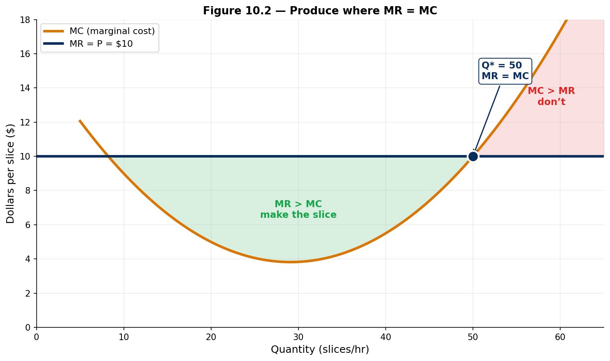
- 40 → 50: adds $100 revenue, $100 cost — breaks even
- 50 → 60: adds $100 revenue, $120 cost — loses $20
- 30 → 40: adds $100 revenue, $80 cost — earns $20
Keep producing while MR > MC; stop when they’re equal. For a price-taker, since P = MR, this is just P = MC.
§9.2
The Profit-Maximization Problem
\(\max_q\; \pi(q) = pq - c(w, r, q)\)
The Firm Chooses Output to Maximize Economic Profit
\[ \pi(q) = \underbrace{p \cdot q}_{\text{revenue}} - \underbrace{c(w, r, q)}_{\text{cost (Ch 8)}} \]
It picks output, not price
A price-taking firm is small relative to its market: its own production doesn't move \(p\). It takes \(p\), \(w\), and \(r\) all as given.
It reuses Ch 8's cost function
\(c(w,r,q)\) already solved the cheapest input mix at every \(q\). Profit-max just picks the best \(q\) given that.
Two equivalent statements — single-variable vs the joint problem over inputs:
\(\displaystyle \max_q\; pq - c(w,r,q)\)
\(\displaystyle \max_{q,K,L}\; pq - wL - rK \;\text{ s.t. }\; q \leq f(K,L)\)
Solve for \(q^*\), Recover Everything Else
The choice variable is \(q\). Once we find the optimum \(q^*\), every other object follows:
\(L^*\)
labor
\(K^*\)
capital
\(c^*\)
total cost
\(R^* = pq^*\)
revenue
\(\pi^* = R^* - c^*\)
profit
Recall from Principles — 1116 §10.2
A perfectly competitive firm faces a horizontal demand curve at the market price: it can sell any quantity at \(p\), but charge a penny more and it loses every customer to identical rivals. That flat demand curve is the geometric content of price taking. Today we make it formal: \(p = MC\), the supply curve, and the shutdown threshold.
A caution on language: we don't claim Alex writes down a Lagrangian. Competitive pressure — entry, exit, owners demanding returns — produces an outcome that looks like he computed the maximum. The theory describes the equilibrium of a process, not the cognition of a manager.
§9.3
The First-Order Condition: \(p = MC\)
Produce up to where the next unit's revenue equals its cost
Set the Derivative of Profit to Zero
Maximize \(\pi(q) = pq - c(w,r,q)\). Differentiate in \(q\):
\[ \frac{d\pi}{dq} = p - \frac{dc}{dq} = p - MC(q) = 0 \]
\(p = MC(q^*)\)
The intuition is "bake one more?"
- If \(p > MC\): the next unit earns \(p\), costs less than \(p\). Expand.
- If \(p < MC\): the next unit costs more than it earns. Cut back.
- Only at \(p = MC(q^*)\) is there no marginal incentive to move. Optimum.
For a price taker, \(p\) is the marginal revenue of one more unit (every unit sells at \(p\)). So \(p = MC\) equates marginal revenue and marginal cost — the producer-side twin of the consumer's equimarginal rule \(MU_i/p_i = \lambda\) from Ch 5.
Second-Order Condition: \(MC\) Must Slope Up
Check it's a maximum, not a minimum:
\[ \frac{d^2\pi}{dq^2} = -MC'(q^*) < 0 \;\Longleftrightarrow\; MC'(q^*) > 0 \]
The firm operates on the upward-sloping part of the \(MC\) curve. Short-run cost functions with diminishing returns to the variable input give rising \(MC\) everywhere, so the SOC holds automatically.
Heads Up — a classic trap
The SOC is "\(MC\) slopes up at \(q^*\)" — the slope \(MC'(q^*) > 0\). It is not "\(MC > 0\)," the level. Almost every cost function has \(MC > 0\) everywhere; the rising-\(MC\) condition is what rules out the falling-\(MC\) side where profit is minimized.
Calculus Corner 9.1. \(\pi(q)=pq-c(w,r,q)\Rightarrow \pi'(q)=p-MC(q)\). FOC: \(p=MC(q^*)\). \(\pi''(q)=-MC'(q^*)\), so the SOC for a max is \(MC'(q^*)>0\). \(p\) is marginal revenue (price-taking); \(MC\) is marginal cost; the FOC equates the two.
\(p = MC\) at the Pizza Counter (\(p = \$10\))
Fixed cost \(\$50\)/day; the production schedule gives \(10, 20, \ldots, 60\) pizzas at \(L = 1, \ldots, 6\) workers.
| Workers \(L\) | Pizzas \(q\) | Variable cost | Total cost | \(MC = \Delta TC/\Delta q\) | Revenue \(pq\) | Profit |
|---|---|---|---|---|---|---|
| 1 | 10 | \$40 | \$90 | — | \$100 | \$10 |
| 2 | 20 | \$90 | \$140 | \$5 | \$200 | \$60 |
| 3 | 30 | \$150 | \$200 | \$6 | \$300 | \$100 |
| 4 | 40 | \$230 | \$280 | \$8 | \$400 | \$120 |
| 5 | 50 | \$330 | \$380 | \$10 \(= p\) | \$500 | \$120 |
| 6 | 60 | \$450 | \$500 | \$12 \(> p\) | \$600 | \$100 |
\(MC\) rises monotonically (diminishing returns to labor → SOC holds). At \(p = \$10\), marginal cost crosses price at \(L = 5\); a sixth worker pushes \(MC\) to \(\$12 > p\). Profit-max: 50 pizzas, 5 workers, \$120/day.
The Same Rule at the Gigafactory
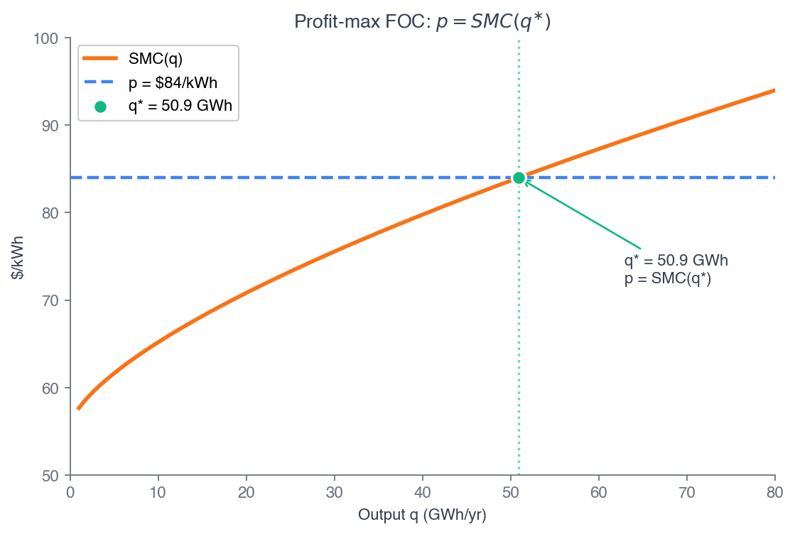
Gigafactory locks (Chs 7–8)
\(A=8,\ \alpha=0.4,\ \beta=0.6,\ \bar K=4\)
\(w=0.10,\ r=0.13\)
New: \(p=\$84\)/kWh, \(m=\$55.6\)/kWh
The rising \(SMC(q)\) crosses \(p = \$84\)/kWh at \(q^* = 50.9\) GWh/yr. Same picture as the pizza table — only the axes are in batteries, not pies.
Read it left to right: below \(q^*\), \(p > MC\) (expand); above \(q^*\), \(p < MC\) (contract).
Walkthrough 9.1 — Profit-Max by Calculus: Differentiate in \(q\)
Problem. Alex's cost curve in smooth form: \(c(q) = 50 + 2q + 0.08q^2\) (\(FC = \$50\)). (1) Differentiate and solve the FOC \(p = MC\) for \(q^*(p)\). (2) Read the shutdown (min AVC) and exit (min ATC) floors off the cost curve. (3) Classify \(p = \$10,\ \$5,\ \$1.50\).
Method (§9.3): \(\displaystyle\max_q\;\pi(q) = pq - c(q)\;\Rightarrow\;\frac{d\pi}{dq} = p - MC(q) = 0\;\Rightarrow\;p = MC.\)
(1) Differentiate → FOC → \(q^*(p)\)
\(MC(q) = c'(q) = 2 + 0.16q\)
\(p = 2 + 0.16q \;\Rightarrow\;\) \(q^*(p) = \dfrac{p-2}{0.16} = 6.25(p-2)\)
(2) Read the floors off \(c(q)\)
\(AVC = \dfrac{VC}{q} = 2 + 0.08q \;\Rightarrow\; \min AVC = \$2\)
\(ATC = \dfrac{50}{q} + 2 + 0.08q \;\Rightarrow\; \min ATC = \$6\) at \(q = 25\)
| Price \(p\) | \(q^* = 6.25(p-2)\) | vs floors | Verdict |
|---|---|---|---|
| \$10 | 50 | \(p > \$6\) | Profit — \(\pi = 500 - 350 = +\$150\) |
| \$5 | 18.8 | \(\$2 < p < \$6\) | Operate at a loss — \(\pi \approx -\$22\), revenue still covers VC |
| \$1.50 | 0 | \(p < \$2\) | Shut down — loss \(= -FC = -\$50\) |
Takeaway. One cost curve → one supply formula \(q^*(p) = 6.25(p-2)\) plus two floors (min AVC, min ATC) that classify every price. The discrete "\(p = MC\) rung" was this same first-order condition — now solved in closed form, good for any \(p\).
Application — Tesla Semi Gigafactory Expansion, 2026
Our theoretical optimum \(q^* = 50.9\) GWh is about 60% above the Ch 7 plant anchor of 32 GWh. In early 2026 Tesla announced a Semi-truck capacity expansion at Nevada Gigafactory.
50,000 trucks/yr \(\times\) ~1 MWh per battery \(\approx\) 50 GWh of incremental production — within rounding error of \(q^*\).
Caveat: a forward-looking expansion isn't a pure static profit-max response — it bakes in expected future demand and the choice of installed capital \(\bar K\) for the next short run.
50.9
Theoretical \(q^*\) (GWh/yr) at \(p=\$84\)
50K
Semi trucks/yr target (Tesla, 2026)
~50
GWh incremental (\(\times\)1 MWh/truck)
\$3.5B
Announced capex line
§9.4
Supply = the Inverse of Marginal Cost
\(q^*(p) = MC^{-1}(p)\) · above the shutdown price
The Supply Curve Is the Rising \(MC\) Curve
The FOC \(MC(q^*) = p\) is one equation in \(p\) and \(q^*\). Solve it for every \(p\) and you trace a function:
\[ q^*(p) = \text{the } q \text{ solving } MC(q) = p \]
Heads Up
Supply isn't a separate mysterious object. It's literally the rising part of the \(MC\) curve, with axes flipped (price up, quantity across). Below min AVC the firm produces zero — supply "lives on the price axis."
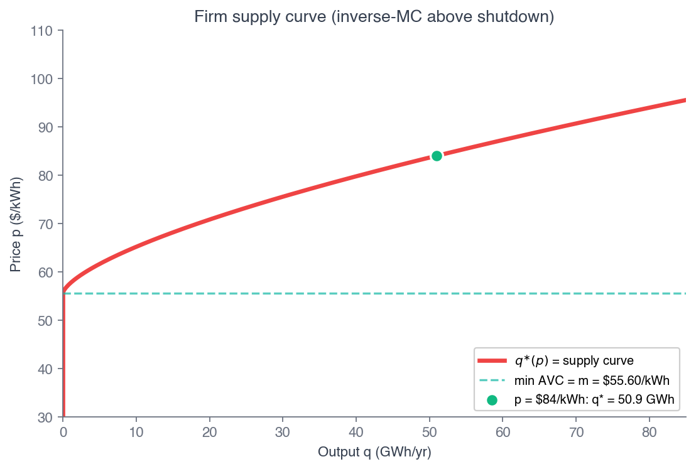
Closed-Form Cobb-Douglas Supply & Its Elasticity
Calculus Corner 9.2. Differentiating the FOC: \(dq^*/dp = 1/MC'(q^*) > 0\) — supply slopes up because \(MC\) slopes up. For the gigafactory SR cost function \(SMC(q) = 0.011967\,(q/13.929)^{2/3} + m\):
\[ q_s^*(p) = 13.929\left(\frac{p - m}{0.011967}\right)^{1.5}\ \text{for } p > m,\qquad q_s^*(p)=0 \text{ otherwise} \]
Supply elasticity
\(\dfrac{d\ln q_s^*}{d\ln p} = 1.5 \cdot \dfrac{p}{p-m}\)
Leading \(1.5 = \beta/(1-\beta)\) is set by the production exponent; \(p/(p-m)\) amplifies through the thin value-added margin. At baseline: 4.43.
Three consequences
- Market supply (Ch 10) = horizontal sum of firms' \(MC\) curves.
- Anything shifting \(MC\) (wage, capital, technology) shifts supply.
- Supply elasticity is set by the technology: \(\beta/(1-\beta)\) under Cobb-Douglas with no materials.
Walkthrough 9.2 — Cobb-Douglas SR Firm Supply
Problem. Gigafactory calibration (\(\bar K = 4, w = 0.1, r = 0.13, m = 0.0556, A = 8, \alpha = 0.4, \beta = 0.6\)). (1) State the SR supply curve. (2) Tabulate \(q_s^*\) at \(p = 0.060, 0.070, 0.080, 0.084, 0.090\). (3) Supply elasticity at \(p = 0.084\)?
(1) Invert the SR \(MC\)
\(q_s^*(p) = 13.929\,((p - 0.0556)/0.011967)^{1.5}\) for \(p > 0.0556\). Convex: diminishing returns mean a small rise in \(p\) unlocks a big rise in \(q\).
(3) Elasticity \(= 1.5 \cdot \dfrac{0.084}{0.084 - 0.0556} = \mathbf{4.43}\).
(2) Tabulate \(q_s^*(p)\)
| \(p\) (B\$/GWh) | \(q_s^*\) (GWh) |
|---|---|
| 0.060 | 3.10 |
| 0.070 | 18.37 |
| 0.080 | 40.55 |
| 0.084 | 50.93 ✓ (= W9.1) |
| 0.090 | 67.92 |
Takeaway. The SR supply elasticity has a clean closed form \(1.5 \cdot p/(p-m)\): the \(1.5 = \beta/(1-\beta)\) is set by the production exponents, and \(p/(p-m)\) amplifies the response through the thin value-added margin.
Hotelling's Lemma — Recover Supply by Differentiating Profit
Define the profit function \(\pi(p, w, r) = \max_q\,[pq - c(w, r, q)]\). Then:
\[ \frac{\partial \pi}{\partial p} = q^*(p,w,r), \qquad \frac{\partial \pi}{\partial w} = -L^*(p,w,r), \qquad \frac{\partial \pi}{\partial r} = -K^*(p,w,r) \]
Three faces of the same envelope-theorem trick — indirect effects vanish by the FOC, leaving only the direct effect:
(consumer, Ch 6)
(cost, Ch 8)
(profit, Ch 9)
Heads Up — mind the signs
\(\partial\pi/\partial p = +q^*\) (a higher price raises profit by \(q^*\)). But \(\partial\pi/\partial w\) and \(\partial\pi/\partial r\) are negative — input prices are costs, so the minus signs are in the lemma.
Walkthrough 9.3 — Hotelling as a Checkable Identity
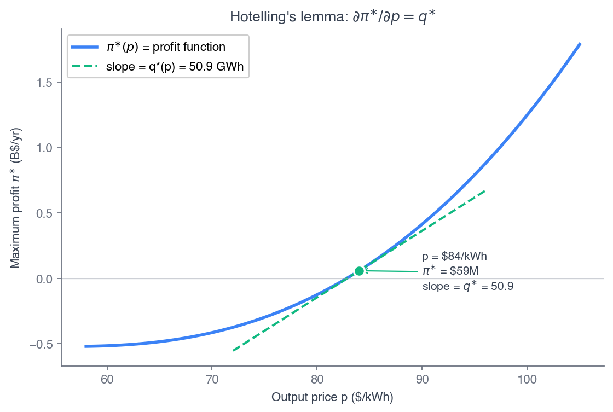
Verify all three derivatives numerically (centered finite differences) at the locked baseline. Profit \(\pi^* \approx \$58.6\)M at \(q^* = 50.93\), \(L^* = 8.679\):
\(\partial\pi/\partial p\): CFD \(= 50.94 \approx q^* = 50.93\) ✓
\(\partial\pi/\partial w\): CFD \(= -8.679 = -L^*\) ✓
\(\partial\pi/\partial r = -\bar K = -4.000\) (exactly linear in \(r\) in the SR) ✓
Takeaway. Hotelling isn't a black box: differentiate profit, recover output. A five-line Python check turns an abstract envelope result into a concrete numerical fact.
Poll #1 — The Firm Is Losing Money. Operate?
At its profit-max output \(q^*\), a firm finds \(\pi^* < 0\) — it's making a loss. Capital \(\bar K\) is installed and the fixed cost \(r\bar K\) is already sunk. Should it keep operating in the short run?
60 sec to vote
Answer: B — operate iff \(p \geq \min AVC\)
Compare operating profit to the shutdown payoff. The sunk \(r\bar K\) appears on both sides and cancels:
\( pq^* - VC(q^*) - r\bar K \;\geq\; -r\bar K \;\Longleftrightarrow\; pq^* \geq VC(q^*) \;\Longleftrightarrow\; p \geq AVC \)
Traps: A ignores that the fixed cost is sunk — a loss can still beat shutting down. C is the long-run exit rule (every cost avoidable). D compares revenue to fixed cost; the right comparison is revenue vs variable cost.
§9.5
Shutdown and Exit
The asymmetry of sunk vs avoidable fixed costs
Short-Run Shutdown vs Long-Run Exit
Short run — \(\bar K\) sunk
Fixed cost \(r\bar K\) is paid whether or not you produce, so it cancels. Compare revenue to variable cost:
\(pq^* - VC \geq -r\bar K\)
Operate iff \(p \geq \min AVC\)
Long run — \(K\) adjustable
Nothing is sunk: sell equipment, walk away from leases, leave the industry. Every cost is avoidable, so compare to total cost:
\(pq^* \geq c_l(q^*)\)
Operate iff \(p \geq \min ATC\)
The asymmetry. SR uses min AVC (the fixed cost is sunk, so operating at a loss can beat not operating); LR uses min ATC (exit avoids every cost). The wedge between the two thresholds is exactly the avoidable fixed cost.
Quasi-Rents: the Contribution to Recovering Sunk Cost
Quasi-rents \(= pq - VC\). Positive quasi-rents mean operating beats shutting down — even when profit is negative.
Heads Up — quasi-rents \(\neq\) profit
Quasi-rents \(= R - VC\). Profit \(= R - VC - FC\). They differ by the fixed cost. A firm can have positive quasi-rents and negative profit — operating, losing money, and rationally choosing to. Shutdown uses quasi-rents; exit uses profit.
Recall from Principles — 1116 §10.3
Alex's three zones as price fell \(\$8 \to \$7 \to \$6.50\): positive profit, operate-at-a-loss, shut down. We now write them as \(p \geq \min AVC\) (SR) and \(p < \min ATC\) (LR exit).
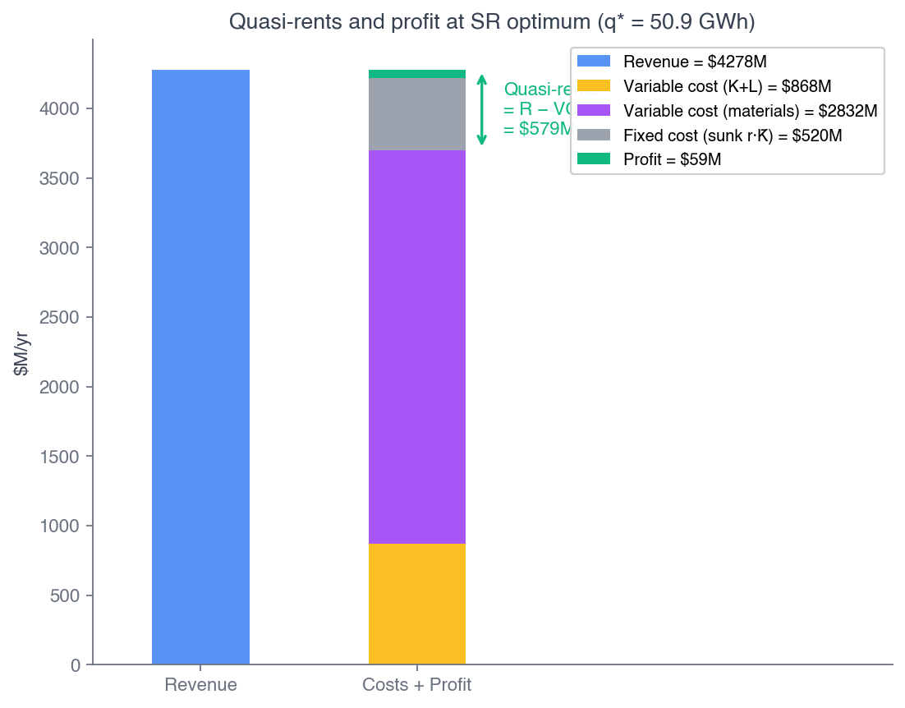
Three Price Regimes at a Glance
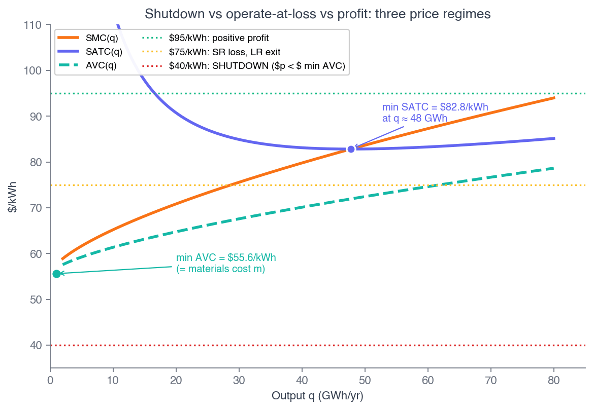
\(p = \$95\): \(p > \min ATC\) \(\Rightarrow\) positive profit.
\(p = \$75\): \(\min AVC < p < \min ATC\) \(\Rightarrow\) operate at a loss (SR), exit (LR). The Walgreens zone.
\(p = \$40\): \(p < \min AVC\) \(\Rightarrow\) shut down. Every unit loses money before fixed cost.
For this cost function, min AVC \(= m = \$55.6\)/kWh; min SATC \(= \$82.8\)/kWh at \(q \approx 48\) GWh.
Walkthrough 9.4 — Price Collapse Below Materials Cost
Problem. Gigafactory baseline (\(\bar K=4, m=0.0556\)). The output price collapses to \(p_{\text{shock}} = 0.0334\) B\$/GWh (\(\$33.40\)/kWh, below materials cost). (1) SR optimal output? (2) Loss at shutdown? (3) Verify shutdown beats producing \(q = 10\).
Set up & solve
(1) Min AVC \(= m = 0.0556\). Since \(p_{\text{shock}} = 0.0334 < m\), the firm can't cover even marginal materials cost. The FOC has no positive solution: \(q_s^* = 0\) (shutdown).
(2) At \(q=0\): pay the sunk fixed cost, produce nothing. Loss \(= -r\bar K = -0.52\) B\$/yr \(= -\$520\)M/yr.
(3) Check \(q = 10\)
\(VC = 0.058 + 0.556 = 0.614\); revenue \(= 0.334\). Profit \(= 0.334 - 0.614 - 0.52 = -0.800\) B\$/yr.
\(-\$800\)M is worse than the \(-\$520\)M shutdown loss. Any positive \(q\) widens the loss. Shutdown is optimal.
Takeaway. When the price falls below materials cost, the next unit loses money on materials alone — before labor even enters. Shutdown caps the loss at the sunk fixed cost: the SR version of "stop digging."
Three Real 2024 Decisions — SR Shutdown vs LR Exit
Walgreens (Oct 2024): closes ~1,200 stores, keeps ~7,500 open despite a \$3B loss. Survivors sit in \(AVC < P < ATC\) — revenue covers variable cost (operate today), not full ATC (wouldn't reopen). The 1,200 had fallen below AVC.
Spirit Airlines (Nov 2024): Chapter 11 at the firm level, but SR shutdown played out route by route — with jet fuel \(+95\%\) to \$4.88/gal, ticket revenue fell below per-flight AVC on 14 cancelled airports.
Northvolt (Nov 2024): textbook LR exit. Production cost \(\sim\$130\)/kWh against a \$84/kWh China-frontier price: \(p < ATC\) sustained even at full capacity. Operations weren't value-creating at any output.

§9.6
Comparative Statics
How \(q^*\) responds to a wage shock and a price drop
Walkthrough 9.5 — A 20% Wage Shock
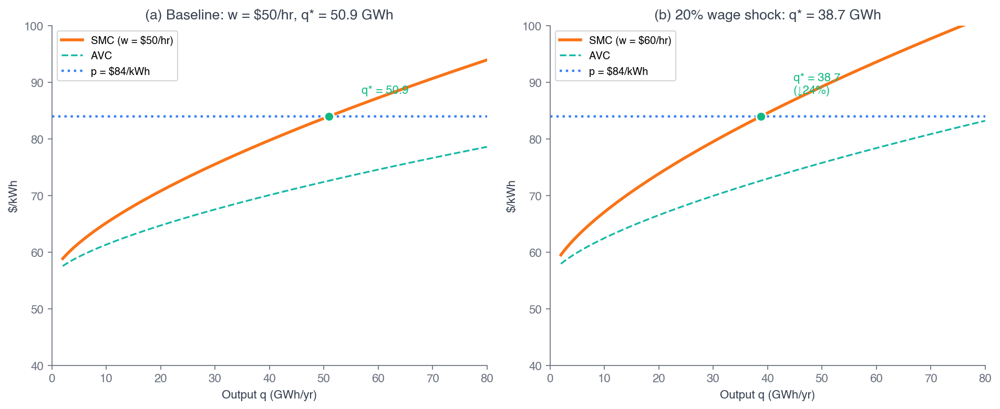
Wage rises 20% (\(w: 0.10 \to 0.12\), the UAW spillover from Ch 8). Output price stays at \(p = \$84\). How does the firm re-optimize?
−24%
Output \(q^*\): 50.9 → 38.7 GWh
−37%
Labor \(L^*\): 8.68 → 5.50 K
Profit flips: \(+\$58.6\)M \(\to -\$80\)M. The firm still operates (\(p > m\)), absorbing a SR loss. Labor falls faster than output because \(L_s \propto q^{1.667}\) under \(\beta = 0.6\).
Walkthrough 9.6 — A 30% Output-Price Drop

Price falls 30% (\(p: 0.084 \to 0.0588\)). The value-added margin \(p - m = 0.0032\) is razor-thin.
−96%
Output \(q^*\): 50.9 → 1.9 GWh
SR: stay
\(p_1 > m\): quasi-rents \(+\$2\)M
LR: exit. \(p_1 = 0.0588 < \min ATC \approx 0.0828\). The firm operates today (loss \$518M, a hair under the \$520M shutdown loss) but cannot cover total cost — it exits.
§9.7 The Long-Run Knife-Edge under CRS
Under our locked Cobb-Douglas with \(\alpha + \beta = 1\) (constant returns), Ch 8 showed LR cost is linear in \(q\). So LR marginal cost equals LR average cost — a constant:
\(LRMC + m = 0.0272 + 0.0556 = \mathbf{0.0828}\)
\(= \$82.81\)/kWh, constant in \(q\)
The LR profit-max FOC \(p = LRMC + m\) is one equation in zero unknowns:
\(p > \$82.81\): every unit earns a margin \(\Rightarrow q \to \infty\).
\(p < \$82.81\): every unit loses \(\Rightarrow\) exit, \(q = 0\).
\(p = \$82.81\) exactly: any \(q \geq 0\) gives zero profit — output indeterminate.
This degeneracy is the bridge to Ch 10. With CRS, individual LR firm supply isn't pinned down. Free entry drives the equilibrium price down to \(LRMC + m\), where every firm earns zero economic profit and the number of firms becomes the equilibrating variable. The locked \(p = \$84\) sits just \$1.20 above the knife-edge — no coincidence.
§9.8 When Does \(p = MC\) Hold? — The Empirical Caveat
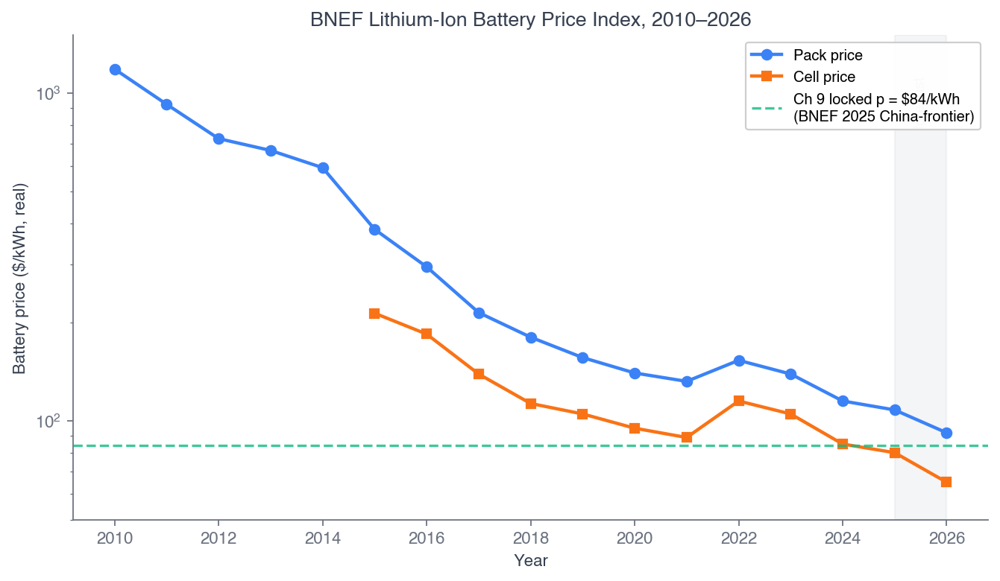
Theory and Data
With market power, \(p > MC\). The markup \(\mu = p/MC\); De Loecker-Eeckhout-Unger (2020) find US average markups rose from 1.21 (1980) to 1.61 (2014). For the average US firm, \(p = MC\) is increasingly a benchmark, not a description.
- \(p = MC\) is the baseline for commodity-like industries (wheat, generic drugs, LFP cells).
- Empirical supply elasticities run far below Cobb-Douglas: tight oil \(\approx 0.076\) (Newell-Prest), vs our 4.43.
- Frictions, capital lumpiness, and thresholds eat the textbook number.
Chapter Summary
Profit-max problem
Choose \(q \geq 0\) to maximize \(\pi = pq - c(w,r,q)\). FOC: \(p = MC(q^*)\). SOC: \(MC'(q^*) > 0\) (\(MC\) slopes up).
Supply = inverse-MC
\(q^*(p)\) solves \(MC(q)=p\) above min AVC, else zero. CD SR elasticity \(= \dfrac{\beta}{1-\beta}\cdot\dfrac{p}{p-m}\).
Hotelling's lemma
\(\partial\pi/\partial p = q^*\), \(\partial\pi/\partial w = -L^*\), \(\partial\pi/\partial r = -K^*\). Same envelope trick as Roy & Shephard.
Shutdown vs exit
SR: operate iff \(p \geq \min AVC\) (FC sunk). LR: iff \(p \geq \min ATC\). Quasi-rents \(= pq - VC\) can be \(+\) while profit is \(-\).
Gigafactory thread
At \(p=\$84\), \(m=\$55.6\): \(q^*=50.9\) GWh, \(L^*=8.68\)K, \(\pi^*=\$58.6\)M. \(p\) inherited by Ch 10.
LR knife-edge (CRS)
Linear LR cost \(\Rightarrow\) degenerate firm supply. Ch 10 closes it with free entry at \(p = LRMC + m = \$82.81\).
Locks carried into Ch 10: \(p = \$84\)/kWh, \(m = \$55.6\)/kWh, plus all Ch 7–8 calibration. The gigafactory thread retires at the end of Ch 10.
Coming Up — Chapter 10: Perfect Competition
Today we built the firm's supply curve. Chapter 10 aggregates it into industry supply and closes the loop with free entry and exit.
Market supply \(= \displaystyle\sum_{\text{firms}} q_i^*(p) \quad\Rightarrow\quad \text{free entry drives } p \to \min LRAC,\ \ \pi = 0\)
- Horizontal summation: add up today's firm supply curves to get market supply.
- Free-entry equilibrium: the CRS knife-edge resolves — price settles at \(LRMC + m = \$82.81\)/kWh and the number of firms \(N^*\) adjusts.
- Welfare theorem: the competitive equilibrium maximizes total surplus.
- Gigafactory thread closes: the locked \(p = \$84\) becomes endogenous.
Before next class: read manuscript §10.1–§10.3. Today's firm supply curve is the building block.
Questions?
Dr. Richeng Piao · ECON 2316 · Chapter 9